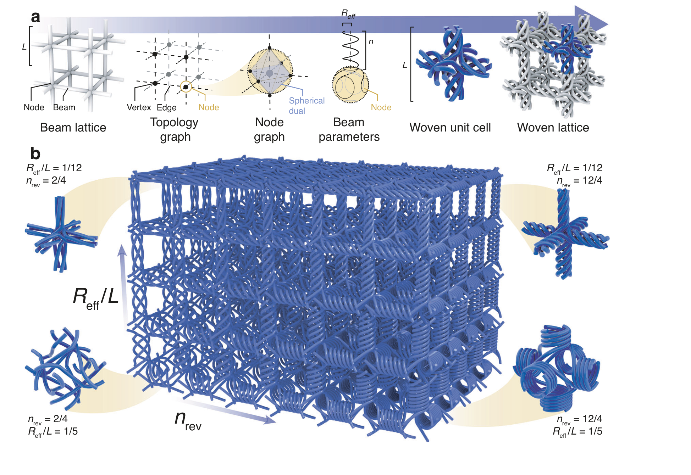
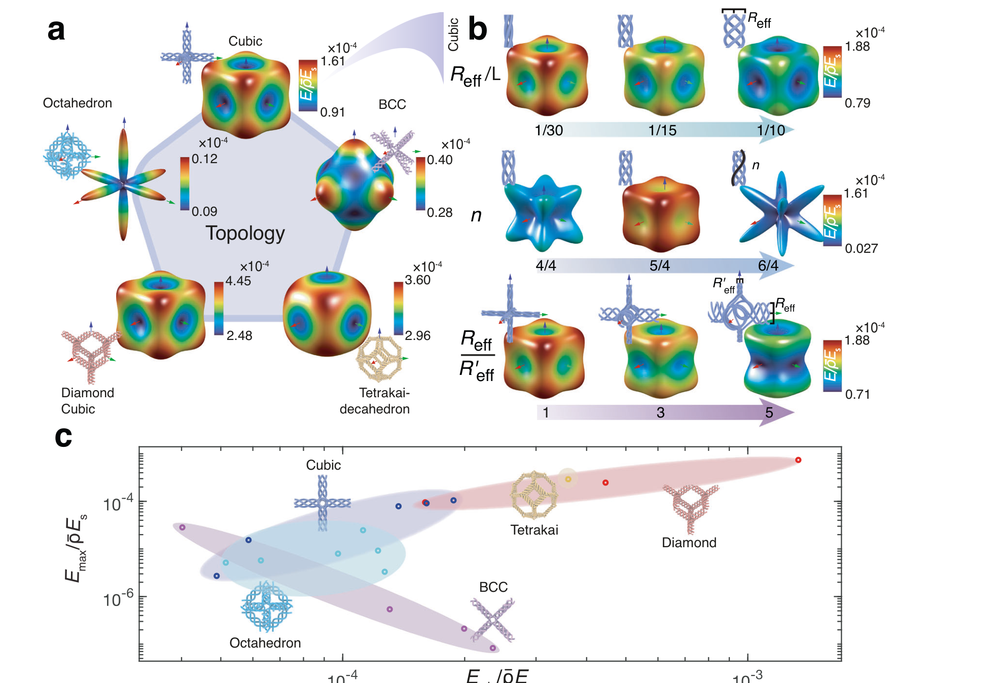
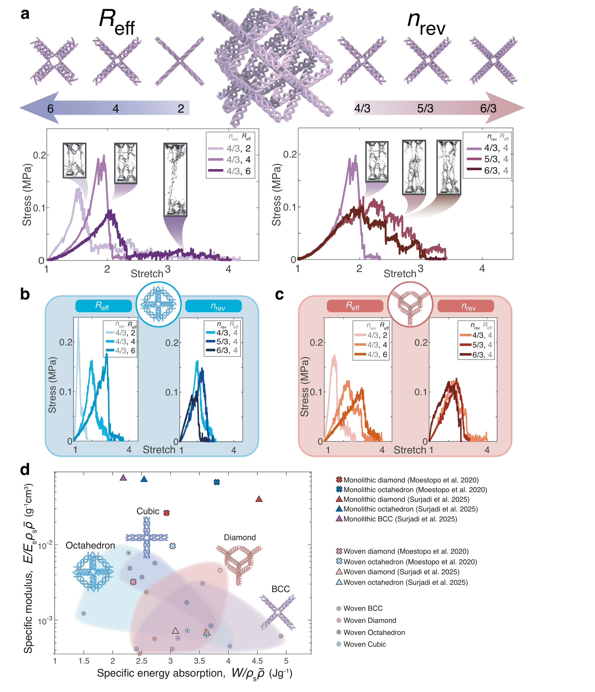
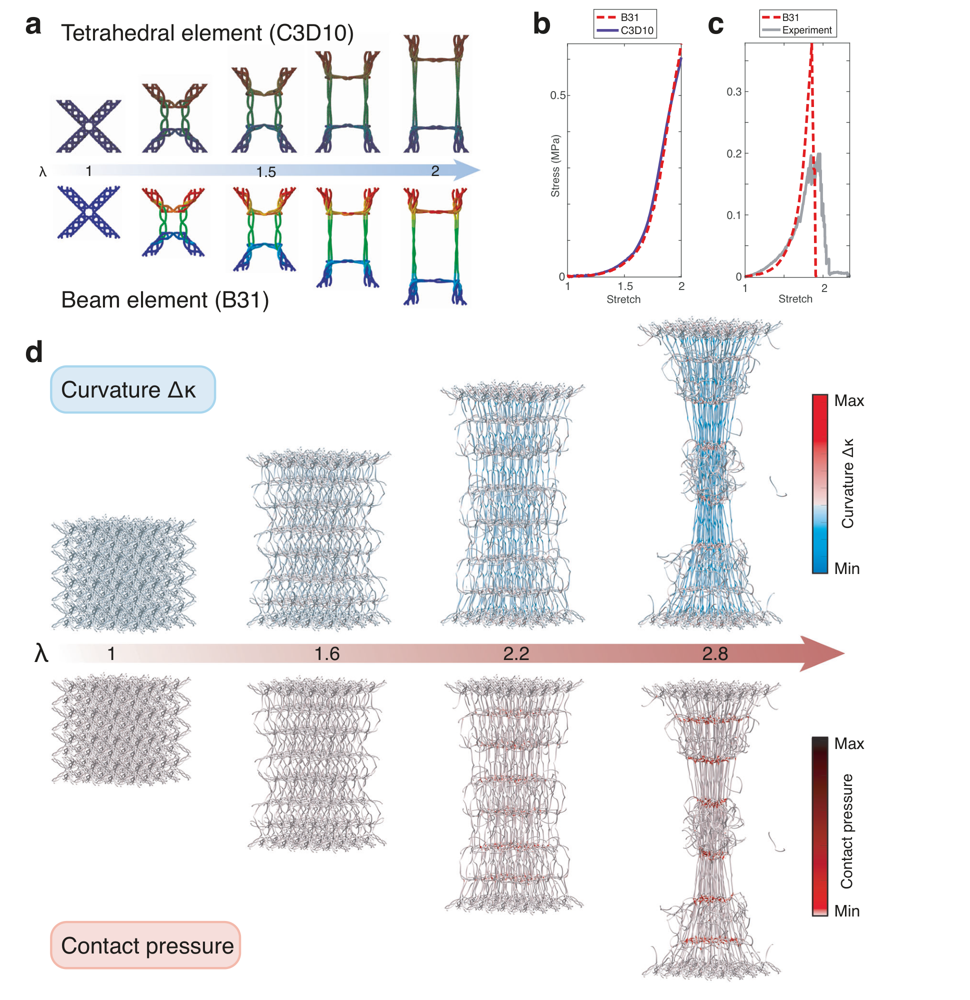
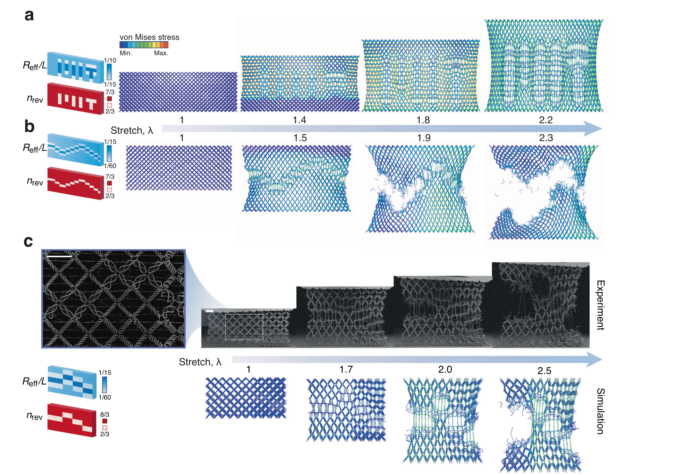

FIG. 1
先把复杂编织拆成“拓扑 + 两个几何旋钮”
截图里的蓝色大立方体就是 Fig. 1b。它不是随手画出的网，而是同一拓扑中让 Reff 沿竖直方向变化、让 nrev 沿水平方向变化得到的功能梯度结构。

传统机械超材料常追求“轻、硬、强”，但直杆和刚性节点也让它们不容易大幅拉伸。作者把每根直梁改写成多股螺旋纤维束，再用图结构自动决定纤维如何在三维节点中穿行；只需调两个参数——有效半径 Reff 和纤维转数 nrev——就能连续调节刚度、各向异性、大变形和预定失效路径。微尺度原位拉伸与有限元结果表明，这是一套可信的前向设计工具；它还不是可实时变形的“主动智能材料”。
证据边界：解读基于出版社正式 PDF。论文采用 CC BY-NC-ND 4.0 开放许可；本页只按原版完整复现研究解读所需的图体，不重绘、不改色，也不分发原始 PDF。文中“可编程”主要指在设计和制造阶段把空间参数写入结构，不代表材料能在使用中主动切换性能。
作者建立了一条“普通梁晶格 → 拓扑图 → 球面节点图 → 多股螺旋纤维 → 三维编织晶格”的自动生成链。拓扑负责决定纤维连到哪里，Reff 与 nrev 负责决定每段纤维束有多粗、多松、多缠绕；二者还能在结构内部逐点变化。由此，原本要手工画 CAD 的复杂编织结构变成可扫描、可仿真、可优化的设计空间。
截图里的蓝色大立方体就是 Fig. 1b。它不是随手画出的网，而是同一拓扑中让 Reff 沿竖直方向变化、让 nrev 沿水平方向变化得到的功能梯度结构。

作者先用周期均匀化计算完整弹性张量，再把每个方向的归一化比刚度画成三维“弹性表面”。表面向某方向伸得越远，说明那个方向越硬；颜色与半径共同显示刚度大小。

作者用两光子光刻打印 IP-Dip2 聚合物微晶格：典型单元边长 60 μm、纤维半径 1 μm，再在扫描电镜内用纳米压痕仪完成原位单轴拉伸。曲线不是抽象参数扫描，而是结构从展开、节点收紧到逐股断裂的全过程。

精细四面体模型能解析纤维接触，却难以扩展到数百个单元。作者改用带库仑摩擦接触和材料硬化的 Timoshenko 梁单元，在保持主要运动学和应力趋势的同时，把一个单元的计算从 125.7 小时降到 1 分 30 秒。

作者把不同 Reff 与 nrev 写进每个空间区域：软区先展开、硬区留作背景，于是拉伸时出现 “MIT”；再把低半径和低缠结区排成曲线，失效便从指定一端启动并沿预设路径合并。

方法补充：实验结构主要为 2×2×2 单元，两光子光刻材料为 IP-Dip2；典型单元边长 L=60 μm、纤维半径 1 μm、相对密度约 1%–5%，拉伸应变率 5×10−2 s−1。梁模型采用 ABAQUS/Explicit 的 B31 Timoshenko 单元、库仑摩擦系数 0.5 和最大应变失效准则。公开软件可生成/可视化晶格并导出 STL、CSV：MIT Portela Research Group / woven-lattice。
← 返回论文细读书架